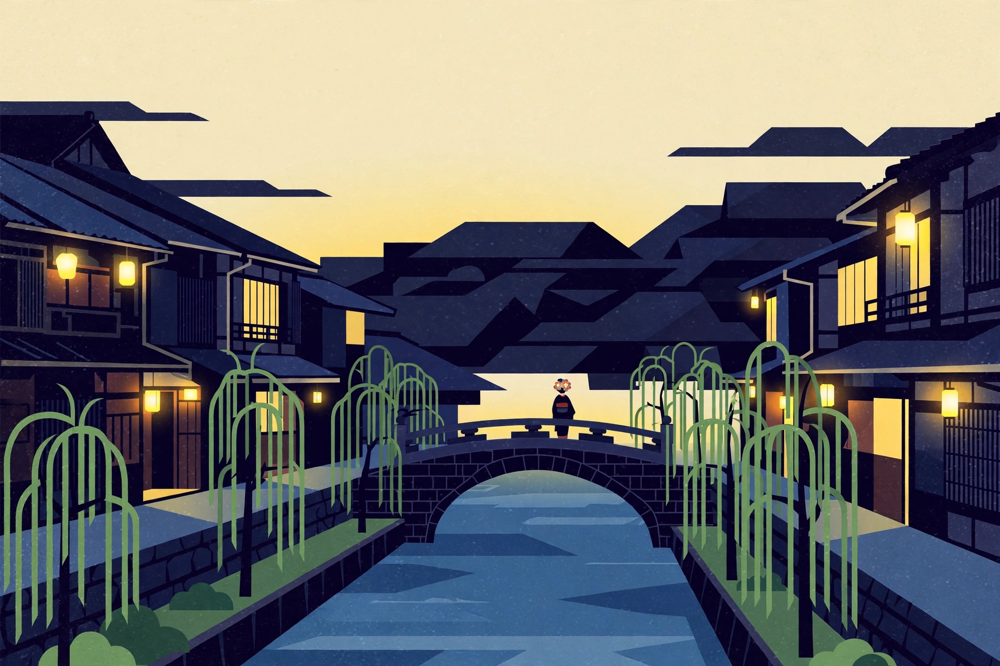

なぞまちワールド
地球の全部が、事件現場になる。
行き先を入れるだけ。
その街で、事件が起きる。
たとえば
Powered by Google Maps ・ Gemini ・ Firebase
1行き先を入れる
2事件が起きる
3歩いて解く
街の名前を入れるだけ、その街専用の事件ファイルが生成される
5つの現場を巡って手がかりを集める（地図は実在の街）
犯人とトリックを当てて、探偵ランクを競う（約10〜15分）
探 もっと探す
「おまかせ捜査」は、ファイルを1件ランダムに引き抜きます。
※ 全事件とも、おうちモード（Google Mapsで実在の街を見ながら捜査）で遊べます。事件は生成エンジンが実在のスポットから組み立てるため、今後もファイルは増え続けます。